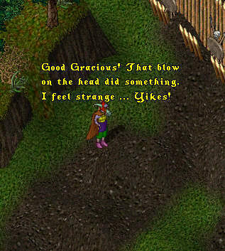
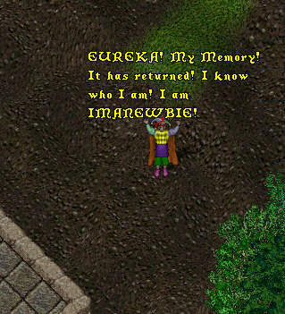
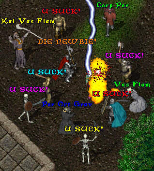
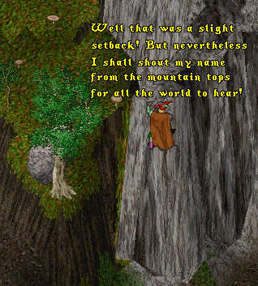
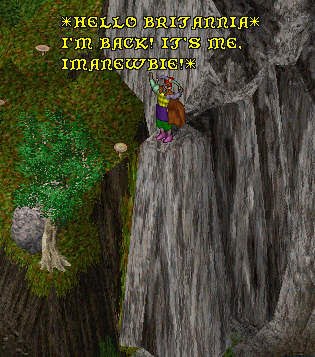
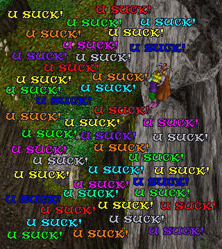
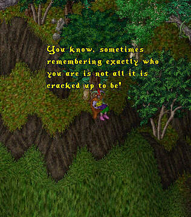

Episode 80: "Back to the Future" (Part 2) continues, with ImaNewbie regaining consciousness from the wallop he received on the head from one of the Amazons. If you haven't read Part 1, head to episode #79 first.



Oh oh! I don't think this was quite the welcoming committee
ImaNewbie expected to greet his miraculous return of his
memory. Undaunted, however, ImaNewbie scales a nearby
peak to shout out his news to all who might hear.



